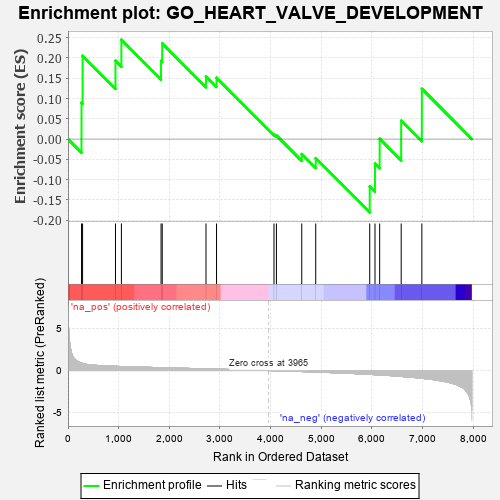
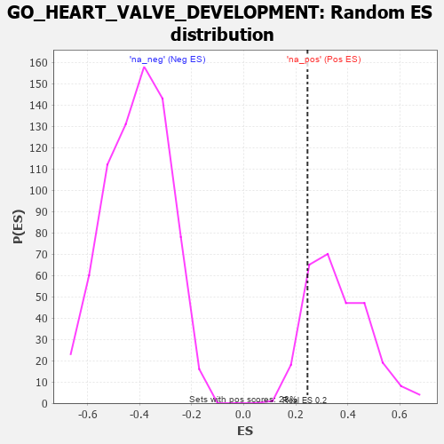

| | | Dataset | 7d |
| Phenotype | NoPhenotypeAvailable |
| Upregulated in class | na_pos |
| GeneSet | GO_HEART_VALVE_DEVELOPMENT |
| Enrichment Score (ES) | 0.24514955 |
| Normalized Enrichment Score (NES) | 0.6806419 |
| Nominal p-value | 0.8637993 |
| FDR q-value | 0.96672404 |
| FWER p-Value | 1.0 |
Table: GSEA Results Summary

Fig 1: Enrichment plot: GO_HEART_VALVE_DEVELOPMENT
Profile of the Running ES Score & Positions of GeneSet Members on the Rank Ordered List
| PROBE | GENE SYMBOL | GENE_TITLE | RANK IN GENE LIST | RANK METRIC SCORE | RUNNING ES | CORE ENRICHMENT | | 1 | TBX20 | | | 267 | 0.880 | 0.0897 | Yes |
| 2 | SHOX2 | | | 288 | 0.842 | 0.2052 | Yes |
| 3 | MATR3 | | | 937 | 0.498 | 0.1934 | Yes |
| 4 | MEF2C | | | 1054 | 0.473 | 0.2451 | Yes |
| 5 | GATA4 | | | 1837 | 0.330 | 0.1931 | No |
| 6 | SMAD4 | | | 1860 | 0.326 | 0.2360 | No |
| 7 | SLIT2 | | | 2724 | 0.195 | 0.1548 | No |
| 8 | ACVR1 | | | 2932 | 0.161 | 0.1513 | No |
| 9 | ROBO2 | | | 4066 | -0.018 | 0.0114 | No |
| 10 | MTOR | | | 4114 | -0.025 | 0.0090 | No |
| 11 | GATA3 | | | 4614 | -0.120 | -0.0369 | No |
| 12 | SLIT3 | | | 4890 | -0.175 | -0.0470 | No |
| 13 | PRDM1 | | | 5956 | -0.457 | -0.1168 | No |
| 14 | JAG1 | | | 6060 | -0.494 | -0.0606 | No |
| 15 | ROCK1 | | | 6152 | -0.520 | 0.0007 | No |
| 16 | ROBO1 | | | 6577 | -0.699 | 0.0453 | No |
| 17 | PDE2A | | | 6985 | -0.927 | 0.1239 | No |
Table: GSEA details [plain text format]

Fig 2: GO_HEART_VALVE_DEVELOPMENT: Random ES distribution
Gene set null distribution of ES for GO_HEART_VALVE_DEVELOPMENT